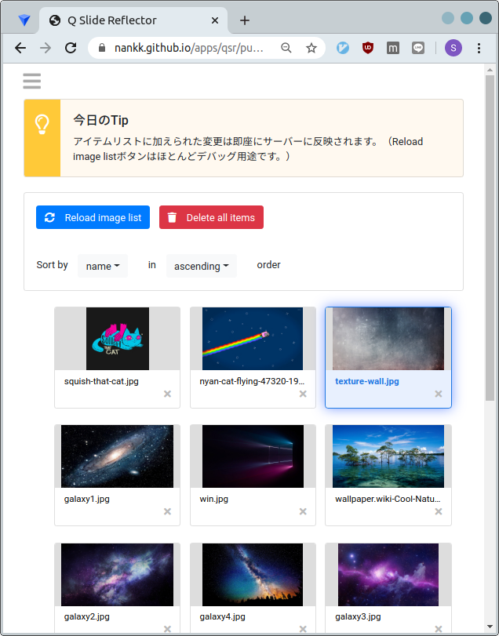

スライドコントローラの使い方
Table of Contents

VRChat TRPG用会議室のスライドコントローラの使用方法について説明します。
1 スライドコントローラ
TRPG会議室に設置されたスライドパネルに表示する画像を管理するアプリです。
ここ にアクセスして使用します。
2020/4/16現在のバージョンでは以下のことが出来ます。
- 画像ファイルのアップロード
- 画像一覧の表示
- 画像の削除
- 画像のソート（ファイル名昇順・降順、手動ソート）
- スライドパネルに表示する画像の選択
以下ではその使用方法について説明します。
2 アップロード
まずは、手持ちのPCからセッションで使用する画像をアップロードします。
アプリにアクセスすると最初に画像一覧ページが表示されているので、左上のハンバーガーメニューからアップロード画面に移りましょう。
クラウドのアイコンに画像ファイルをドラッグアンドドロップし、しばらく待てば完了です。
ちなみに、現在のバージョンでは Browse filesボタンは飾りです 。
（本当は動作するはずだったがバグって動かなくなった。何故だ。）
3 画像の削除
もし間違った画像をアップロードしてしまった場合は画像一覧ページから削除できます。
✕を押すだけです。
簡単ですね。
全ての画像を一気に削除したい場合はDelete all itemsボタンをクリックします。
4 画像のソート
アップロードした画像は自分の思ったとおりの順番に並んでいないかもしれません。
セッション中に操作しやすいように並べ替えましょう。
4.1 ファイル名ソート
Sort by [name] in [ascending] order
の name または ascending のところから希望の並び順を選択すると即座に並べ替えが行われます。
4.2 手動ソート
ファイル名を適当に付けていた場合、ファイル名に従ってソートしても思ったような並びにならないかもしれません。
アイテムをドラッグ（モバイル端末の場合は短くホールドしてからスワイプ）すると並べ替えを行うことができます。
なお、ドラッグして画面の端まで持っていくとマウスカーソルまたは指がある方向に画面がゆっくりスクロールします。
5 画像の選択
VRChat会議室内のスライドパネルに投影する画像を選択肢ます。
選択するには画像をクリックまたはタップします。
アイテムの背景および縁取りが青くなったら選択完了です。
選択した画像は https://nankk.net:55551/get-image にアクセスして閲覧することができます。
6 VRChat会議室内での操作
ここまでの操作だけでは、スライドパネルへの画像の投影は完了していません。
前項で選択した画像は、VRChat会議室内に設置されている豆腐状の見た目のボタンを押すことによりスライドパネルに投影されます。
7 まとめ
VRChat会議室内のスライドパネルに手持ちの画像を投影させるためには、
- スライドコントローラアプリ にアクセスして、
- 画像をアップロードして、
- 自分の好きなように並べ替えて、
- 表示させたい画像を選択する。
以上の操作を行います。
これで画像をスライドパネルに投影する準備が完了するので、実際に投影させる操作はVRChat会議室内の豆腐状のボタンを押すことにより行いましょう。
以上です。